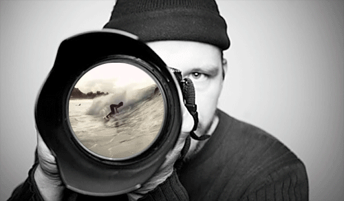
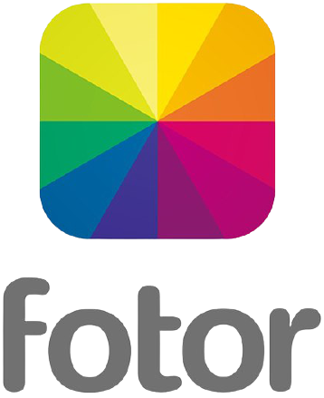

Exploración de la Identidad
La fotografía como medio audiovisual en el diseño gráfico se refiere a la utilización de imágenes visuales para comunicar mensajes de manera efectiva.
La fotografía es un medio de comunicación visual que captura momentos y emociones de manera inmediata. Algunos ejemplos de medios audiovisuales relacionados con la fotografía son:
- Retratos
- Fotografías documentales
- Fotoperiodismo
- Fotografía de moda
- Fotografía publicitaria
- Fotografía de paisajes
- Fotografía artística
- Fotografía de eventos
- Fotografía de productos
- Ensayos fotográficos
Importancia de la Fotografía en el Diseño Gráfico
La fotografía desempeña un papel crucial en el diseño gráfico debido a su capacidad para captar la atención del espectador, transmitir emociones y adaptarse a diferentes plataformas y audiencias.
En el diseño gráfico, la fotografía se utiliza como herramienta visual poderosa para complementar y realzar el mensaje que se quiere comunicar. Ya sea a través de retratos, imágenes de productos o fotografías de paisajes, la fotografía permite transmitir ideas de manera clara y persuasiva.
La combinación de diseño gráfico y fotografía permite crear proyectos visualmente impactantes que generan emociones en la audiencia y ayudan a diferenciarse y destacar frente a la competencia.
En resumen, la fotografía en el diseño gráfico es fundamental para transmitir mensajes de manera efectiva, generar impacto visual y crear conexiones emocionales con el público objetivo.
Tipos de Medios Audiovisuales
Fotografía:
La fotografía es un medio audiovisual que captura momentos y emociones a través de imágenes estáticas. Se utiliza en diversos contextos, como el arte, la publicidad, el periodismo y la documentación visual.
Cine:
El cine es un medio audiovisual que utiliza imágenes en movimiento para contar historias. Las películas pueden ser una poderosa herramienta para transmitir mensajes y emociones a través de la combinación de imágenes y sonidos.
Televisión:
La televisión es un medio audiovisual que transmite imágenes y sonidos en vivo o grabados. Los programas de televisión pueden utilizar la fotografía y otras técnicas visuales para crear impacto visual y transmitir información de manera efectiva.
Video:
El video es un medio audiovisual que se graba y se reproduce utilizando un dispositivo electrónico. En el diseño gráfico, el video puede ser utilizado para crear contenido visual dinámico que complemente y enriquezca la experiencia del usuario en diversos contextos, como sitios web y presentaciones multimedia.
Multimedia:
La multimedia es un medio audiovisual que combina varios formatos de medios, incluyendo imágenes, video, audio y texto. En el diseño gráfico, la multimedia puede ser utilizada para crear experiencias interactivas y envolventes que cautiven al espectador y transmitan mensajes de manera efectiva.
Internet:
Internet es una red global de computadoras que permite a los usuarios acceder a una amplia variedad de recursos, incluyendo medios audiovisuales. En el diseño gráfico, Internet proporciona un medio para compartir y distribuir contenido visual, incluyendo fotografías, videos y otros medios audiovisuales.
Los medios audiovisuales tienen una serie de ventajas sobre otros medios de comunicación, como:
- Son atractivos: Las imágenes y los sonidos pueden captar la atención de la audiencia y mantenerla interesada.
- Son informativos: Los medios audiovisuales pueden transmitir mucha información en poco tiempo.
- Son emocionales: Las imágenes y los sonidos pueden evocar emociones en la audiencia.
- Son versátiles: Los medios audiovisuales se pueden utilizar para una amplia variedad de propósitos.

Herramientas para Fotografía y Edición de Imágenes
La fotografía y la edición de imágenes requieren de herramientas especializadas para capturar y manipular imágenes de manera efectiva. Algunas de estas herramientas incluyen:
 Adobe Photoshop: Adobe Photoshop es el estándar de la industria para la edición de imágenes rasterizadas. Es utilizado por fotógrafos profesionales y entusiastas para retocar, mejorar y manipular imágenes de manera creativa.
Adobe Photoshop: Adobe Photoshop es el estándar de la industria para la edición de imágenes rasterizadas. Es utilizado por fotógrafos profesionales y entusiastas para retocar, mejorar y manipular imágenes de manera creativa.- Adobe Lightroom: Adobe Lightroom es una aplicación de edición de fotos diseñada específicamente para fotógrafos. Ofrece potentes herramientas de organización y edición que permiten ajustar el color, la exposición y otros aspectos de la imagen.
- Capture One: Capture One es un software de edición de fotos utilizado principalmente por fotógrafos profesionales. Ofrece herramientas avanzadas de ajuste de color, gestión de archivos RAW y rendimiento de alta velocidad.
- Adobe Photoshop Express: Adobe Photoshop Express es una versión simplificada de Photoshop diseñada para dispositivos móviles. Es ideal para realizar ajustes rápidos en fotos tomadas con teléfonos inteligentes o tabletas.
 GIMP: GIMP es un editor de imágenes gratuito y de código abierto que ofrece una amplia gama de herramientas de edición. Es una excelente opción para usuarios que buscan una alternativa gratuita a Photoshop.
GIMP: GIMP es un editor de imágenes gratuito y de código abierto que ofrece una amplia gama de herramientas de edición. Es una excelente opción para usuarios que buscan una alternativa gratuita a Photoshop.- Pixlr: Pixlr es un editor de fotos en línea que ofrece herramientas de edición básicas y avanzadas. Es ideal para usuarios que desean editar fotos de manera rápida y sencilla sin necesidad de instalar software.
 Canva: Canva es una plataforma de diseño gráfico en línea que incluye herramientas para crear diseños de todo tipo, incluidas imágenes para redes sociales, tarjetas de presentación y carteles. Es popular entre usuarios que buscan crear diseños de manera rápida y fácil.
Canva: Canva es una plataforma de diseño gráfico en línea que incluye herramientas para crear diseños de todo tipo, incluidas imágenes para redes sociales, tarjetas de presentación y carteles. Es popular entre usuarios que buscan crear diseños de manera rápida y fácil.- Fotor: Fotor es un editor de fotos en línea que ofrece una amplia gama de herramientas de edición y efectos especiales. Es ideal para usuarios que desean mejorar sus fotos con filtros y ajustes de color.
- Photoscape: Photoscape es un software de edición de fotos gratuito que ofrece herramientas para retocar, editar y organizar imágenes. Es una opción popular entre usuarios que buscan una alternativa gratuita y fácil de usar.
- Affinity Photo: Affinity Photo es una aplicación de edición de fotos profesional que ofrece herramientas avanzadas de edición y manipulación de imágenes. Es una opción popular entre fotógrafos y diseñadores que buscan una alternativa a Photoshop.
Tendencias y Tecnologías Emergentes en Fotografía y Diseño Gráfico
Tendencias y Tecnologías Emergentes
El mundo de la fotografía y el diseño gráfico está experimentando constantes avances tecnológicos y nuevas tendencias que están transformando la forma en que capturamos, editamos y presentamos imágenes visuales. Estas innovaciones están redefiniendo la práctica y la experiencia del diseño gráfico y la fotografía.
tendencias y tecnologías emergentes más importantes en fotografía y diseño gráfico:
Fotografía 360°:
La fotografía 360° permite capturar imágenes panorámicas de 360 grados, lo que brinda una experiencia inmersiva para los espectadores. Esta tecnología está siendo utilizada en áreas como la fotografía de paisajes, la arquitectura y el turismo virtual.
Realidad Aumentada en Fotografía:
La realidad aumentada (AR) en fotografía permite superponer elementos digitales sobre el mundo real, creando experiencias interactivas y envolventes para los espectadores. Esto se utiliza en aplicaciones de visualización de productos, marketing experiencial y arte digital.
Inteligencia Artificial en Edición de Imágenes:
La inteligencia artificial (IA) está revolucionando la forma en que se editan las imágenes, automatizando tareas como el retoque facial, la eliminación de objetos no deseados y la mejora de la calidad de la imagen. Esto permite a los diseñadores gráficos y fotógrafos trabajar de manera más eficiente y creativa.
Diseño Generativo:
El diseño generativo utiliza algoritmos y datos para crear imágenes y patrones de forma autónoma. Esta tecnología permite explorar nuevas formas de expresión visual y generar diseños únicos y personalizados.
Realidad Virtual para Presentaciones de Diseño:
La realidad virtual (VR) se está utilizando en el diseño gráfico para crear presentaciones inmersivas donde los clientes pueden experimentar y interactuar con los diseños de manera tridimensional. Esto facilita la comunicación y la comprensión de conceptos de diseño complejos.
Impresión 3D en Diseño Gráfico:
La impresión 3D está permitiendo a los diseñadores gráficos crear prototipos y productos físicos con formas y texturas innovadoras. Esto amplía las posibilidades creativas y la integración entre el diseño digital y físico.
Ejemplos de Proyectos Destacados en Fotografía y Diseño Gráfico

1. "The Wild Within": Esta serie fotográfica documenta la belleza y la intriga de la naturaleza salvaje, utilizando técnicas de fotografía de naturaleza y paisaje para capturar momentos únicos en entornos naturales. Las imágenes destacan la diversidad de la vida silvestre y los paisajes impresionantes que nos rodean.

2. "Neo-Constructivism": Este proyecto de diseño gráfico se inspira en los principios del constructivismo ruso, utilizando formas geométricas, colores vibrantes y composiciones dinámicas para crear obras visuales impactantes. La combinación de elementos abstractos y conceptuales crea una experiencia visual única para el espectador.

3. "Urban Perspectives": Esta serie fotográfica explora la vida urbana desde perspectivas inusuales, utilizando técnicas de fotografía de calle y arquitectónica para capturar la esencia y el carácter de los entornos urbanos. Las imágenes revelan la belleza oculta en la cotidianidad de la vida urbana.

4. "Interactive Art Installations": Estos proyectos de diseño gráfico combinan elementos visuales y tecnología interactiva para crear experiencias inmersivas para el espectador. A través de la integración de arte digital y medios interactivos, estos proyectos desafían las percepciones tradicionales del arte y la interacción.

5. "Experimental Typography": Este proyecto de diseño gráfico explora nuevas formas de expresión tipográfica, utilizando técnicas innovadoras y conceptos creativos para desafiar las convenciones del diseño de texto. Las composiciones tipográficas experimentales ofrecen una visión fresca y provocativa del poder del lenguaje visual.
Consejos y Mejores Prácticas para Fotografía y Diseño Gráfico
Planificación:
Define tu visión: ¿Qué quieres comunicar con tu proyecto visual? Define claramente tus objetivos estéticos y conceptuales para guiar tu proceso creativo.
Comprende a tu audiencia: ¿Quién es tu público objetivo? Conoce sus preferencias estéticas y sus necesidades para crear contenido relevante y atractivo para ellos.
Crea un concepto visual: Desarrolla una idea creativa sólida que guíe tu trabajo fotográfico o de diseño gráfico. Esto incluye la selección de temas, estilos y elementos visuales clave.
Establece un presupuesto: Define un presupuesto claro para tu proyecto que incluya gastos en equipos, materiales y recursos necesarios.
Producción:
Utiliza equipos de alta calidad: Invierte en cámaras, lentes y software de edición de primera calidad para garantizar resultados profesionales.
Experimenta con la iluminación: Aprende a utilizar la luz de manera efectiva para resaltar tus sujetos y crear atmósferas evocativas en tus fotografías o diseños.
Considera el sonido: Si tu proyecto implica contenido multimedia, asegúrate de capturar y editar el audio con la misma atención que dedicas a la parte visual.
Dedica tiempo a la postproducción: La edición es clave para perfeccionar tus imágenes o diseños. Tómate el tiempo necesario para retocar, ajustar y mejorar tus obras.
Distribución y Promoción:
Elige plataformas adecuadas: Selecciona los canales de distribución más apropiados para compartir tus obras con tu audiencia, ya sea a través de galerías en línea, redes sociales o exposiciones físicas.
Comparte tu proceso creativo: Comparte tu proceso creativo con tu audiencia para generar interés y compromiso. Esto puede incluir publicaciones en blogs, videos detrás de escena o tutoriales sobre tus técnicas.
Participa en la comunidad: Únete a grupos y comunidades de fotografía y diseño gráfico para obtener retroalimentación, inspiración y oportunidades de colaboración con otros creativos.
Consejos adicionales:
- Explora nuevas técnicas: No tengas miedo de experimentar con nuevas técnicas y estilos para expandir tu creatividad.
- Busca inspiración: Mantente al tanto de las últimas tendencias y estilos en fotografía y diseño gráfico explorando el trabajo de otros artistas y creativos.
- Persevera: La práctica constante es clave para mejorar tus habilidades y desarrollar tu estilo único en la fotografía y el diseño gráfico. No te desanimes por los desafíos; cada obstáculo es una oportunidad de crecimiento.